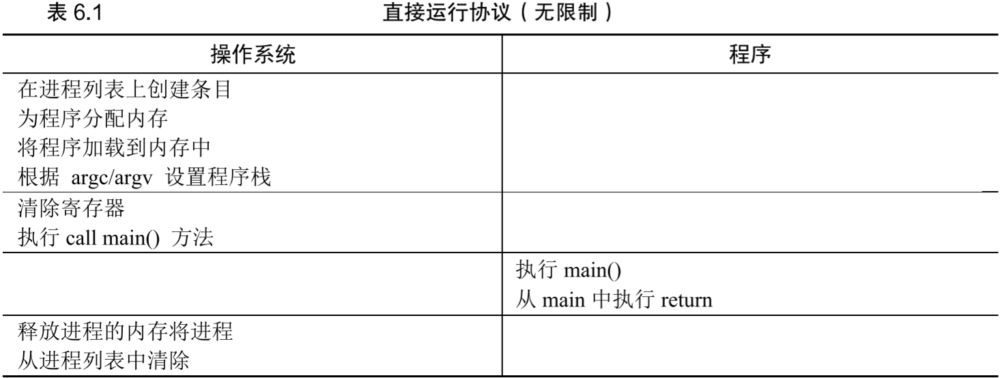
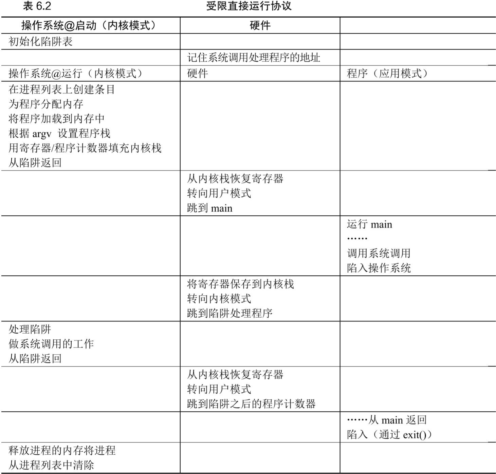
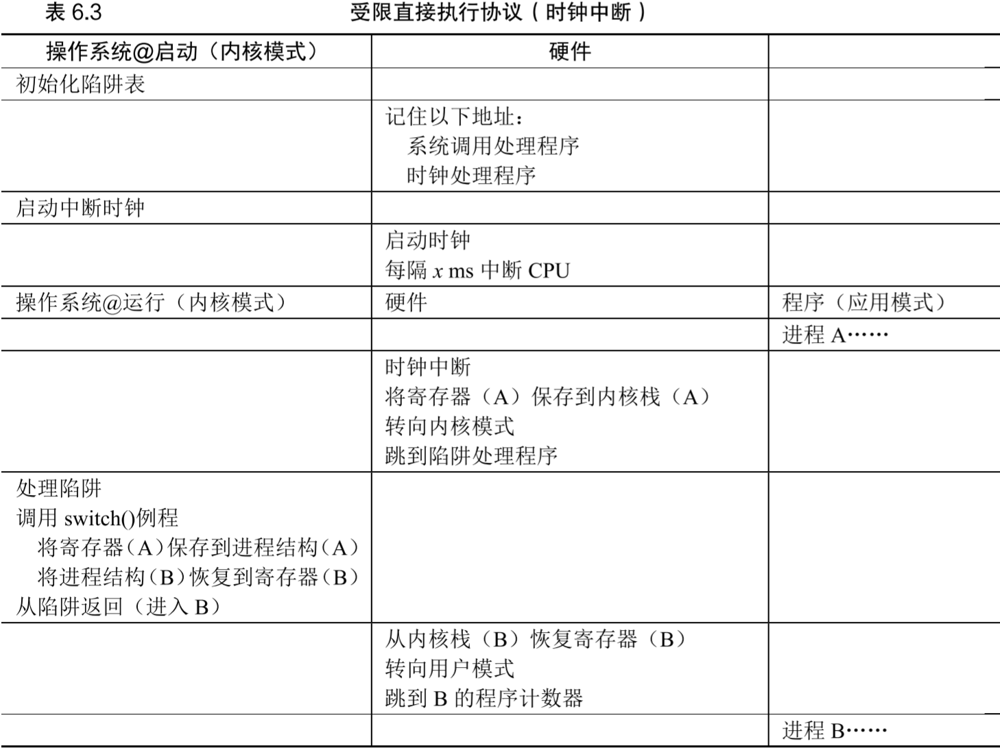

OSTEP第6章 机制：受限直接执行
文章目录
- 时分共享cpu：运行一个进程一段时间，然后运行另一个进程，如此轮换，实现虚拟化
- 时分共享要解决的问题：性能和OS控制权
- 如何不增加系统运行时开销
- 如何让系统在用户程序运行时可重新获取控制权
- OS通常会利用硬件支持来解决这两个问题
基本技巧：受限直接执行
- 解决时分共享问题的方法：
受限直接执行(limited direct execution, LDE) 直接执行：OS在进程列表中创建一个item，为其分配内存并将代码加载到内存，跳转到main开始执行用户代码。如表6.1 - 如果对程序直接执行而不加限制，OS无法控制任何事情，会成为“仅仅是一个库”
问题1：受限制的操作
- 直接执行的优点是直接在硬件上运行，快速
- 进程必须能执行IO等受限制的操作，但不能完全控制系统
- 用户模式和内核模式：
用户模式：在用户模式下运行的代码会受到限制，无法访问某些硬件或进行特权操作内核模式：OS以这种模式运行，该模式下的代码可做任意事，包括特权操作，以及访问机器的所有资源
- 用户希望执行特权操作时可使用OS提供的
系统调用，它允许内核向用户程序暴露某些关键功能，如访问文件系统、创建/销毁进程、与进程通信、分配更多内存等，大多数系统提供几百个系统调用（见POSIX标准） - 用户希望执行特权操作：陷入内核
陷入(trap)：发起系统调用时程序执行trap指令，进入内核，并将特权级别提升到内核模式从陷阱返回(return-from-trap)：系统调用结束后程序执行return-from-trap指令，返回到发起系统调用的用户程序，并将特权级别降低到用户模式
- 执行trap时必须确保存储足够的调用者寄存器，以便在return-from-trap时能正确返回到用户程序的状态
- x86上保存寄存器：执行trap时cpu会将一些寄存器的内容push到进程的
内核栈(kernel stack)上，执行return-from-trap时从内核栈中pop出这些值 系统调用与过程调用的区别：系统调用是一种过程调用，但内部有trap指令- C库中进行系统调用的部分是用汇编写的
陷阱表(trap table)：- 发起系统调用的进程不可trap到内核的任意地址，否则很不安全
- OS启动时处于内核模式，它设置
陷阱表来告诉硬件：在发生哪些异常事件（trap）时要运行哪些代码（即对应trap处理程序的位置） - 每次启动机器，陷阱表更新
- LDE机制的过程见表6.2： 
- 如上表，
LDE机制有两个阶段：- 第一阶段在系统引导时：处于内核模式，内核初始化陷阱表，cpu记住其位置
- 第二阶段在运行进程时：
- 启动进程前处于内核模式，做完准备工作后使用return-from-trap进入main开始执行程序并进入用户模式
- 进程发起系统调用时trap进内核，结束系统调用时return-from-trap
- 进程完成工作后从main返回，trap进内核进行清理工作并正确退出程序
问题2：在进程之间切换
- 上一节操作的一个问题是：如何实现进程间切换，即程序运行起来后OS如何重新获取控制权实现调度
协作方式：等待系统调用
协作方式：OS等待应用程序执行系统调用- OS假定运行时间长的进程会定期将控制权交给OS（通过系统调用）
- 若应用程序执行了非法操作，也会将控制权交给OS
- 若应用程序既不进行系统调用又无非法操作，则OS永远得不到控制权，只有重启才能解决问题
非协作方式：操作系统进行控制
非协作方式：OS通过硬件定时器获取控制权- 时钟设备（硬件）维护一个
定时器中断，每次该定时器中断发生时，停止当前运行的进程，运行OS的中断处理程序，OS重新获得控制权 - OS启动时必须启动时钟，并通知它在发生定时器中断时应该运行哪些代码
- 定时器中断发生时进入内核，相当于发生了系统调用，必须为当前进程保护现场，以便return-from-trap时可正确恢复
- 时钟设备（硬件）维护一个
保存和恢复上下文
调度程序：当OS获取控制权时，需要决定是继续运行当前进程还是切换到另一个进程上下文切换：- 当调度程序决定切换到另一个进程时，OS将为当前进程保存寄存器值（到它的内核栈），并恢复即将执行的进程的寄存器值（从它的内核栈）。这样可确保return-from-trap时返回到即将执行的进程
- 通过switch()切换栈，内核在进入switch()调用时是一个进程（被中断的进程）的上下文，从switch()返回时是另一个进程（即将执行的进程）的上下文。OS最终return-from-trap时，即将执行的进程变成了当前运行的进程，上下文切换完成
- 进程间切换的过程见表6.3： 
- 上表中：
- 进程A正在运行，被定时器中断，硬件保存寄存器到其内核栈，进入内核将控制权交给OS
- OS在处理定时器中断的程序中进行调度，决定从进程A切换到进程B，调用switch()处理两个进程的寄存器保存/恢复，切换上下文（即改变栈指针来使用B的内核栈）
- return-from-trap，恢复B的寄存器并运行
- 上表中有两种类型的寄存器保存/恢复：
- 发生定时器中断时：正在运行的进程，其
用户寄存器由硬件隐式保存到该进程的内核栈 - OS决定由A切换到B时：内核寄存器，其
内核寄存器被OS明确保存到该进程的进程结构中
- 发生定时器中断时：正在运行的进程，其
- 例子：xv6的上下文切换代码
|
|
担心并发吗
- 若在中断或trap处理过程中发生另一个中断，OS需要考虑这种情况
- 使用lmbench工具可测量上下文切换/系统调用的时间
- 现代OS的上下文切换在2G-3GHz处理器上能达到亚微秒级
小结
受限直接执行(limited direct execution, LDE)：让应用程序直接在cpu上运行，但首先确保设置好硬件，以便在无OS帮助的情况下限制进程可执行的操作- 重启是有用的，它可让软件回到已知的状态，还可回收泄露的资源。在大规模集群服务器中，系统管理软件定期重启一些机器
- OS启动时设置trap处理程序并启动定时器中断，然后仅在受限模式下运行进程。这样可确保进程高效运行，只在进程执行特权操作或独占cpu时间过长时才需OS干预
作业（测量）
- 测量系统调用的时间可用0字节读取
- 测量时间可用系统调用
gettimeofday()，它返回自1970年以来的时间（微秒） - 更精确的时间测量方法是x86的
rdtsc/rdtscp指令 - 测量系统调用时间：
|
|
- 由于现代处理器的流水线能力，故重复进行多次系统调用取平均时间测得的结果会偏小